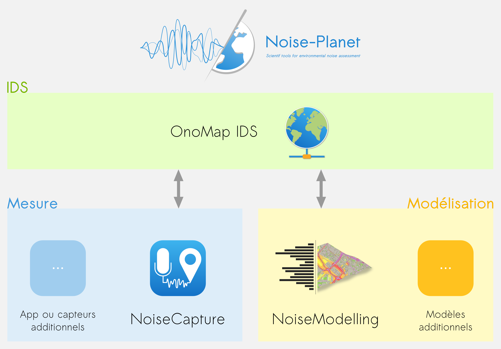

Le projet
Le projet
Noise-Planet
Outils scientifiques pour l'évaluation du bruit dans l'environnement
Le projet Noise-Planet vise à fournir un cadre global et générique dédié à la collecte, à la modélisation et à l'évaluation du bruit dans l'environnement.
Ce projet est divisé en trois parties principales :
- L'Infrastructure de Données Spatiales OnoMap (décrite ici),
- le module de "mesure",
- le module de "modélisation".
